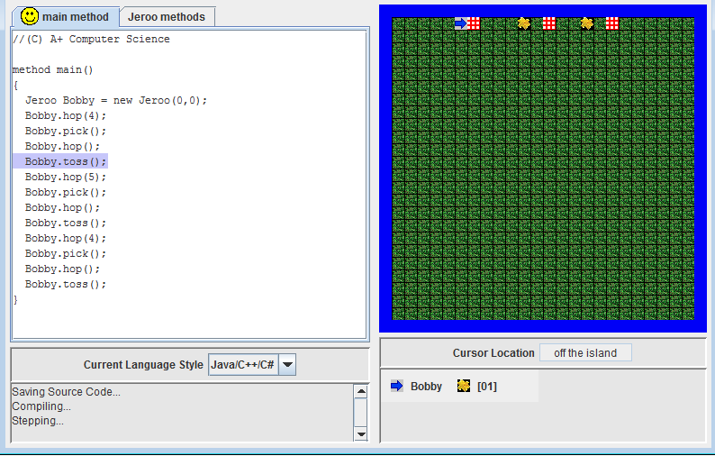
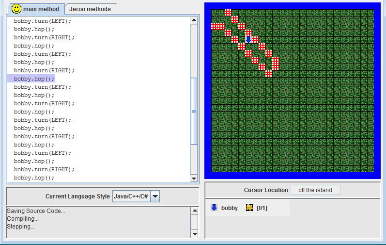
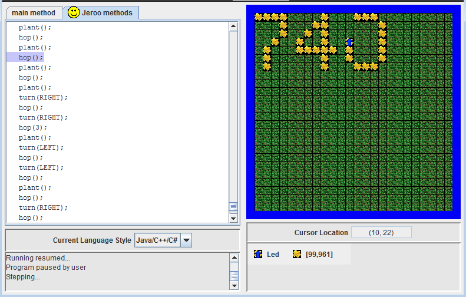
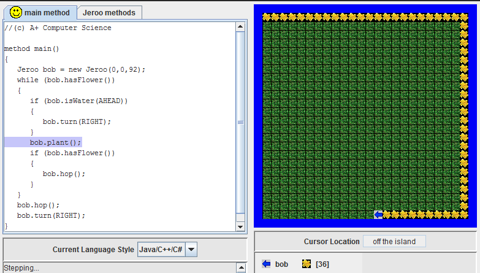
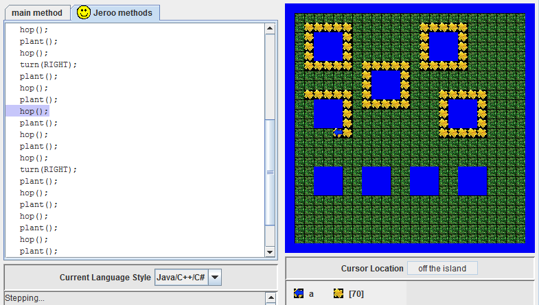
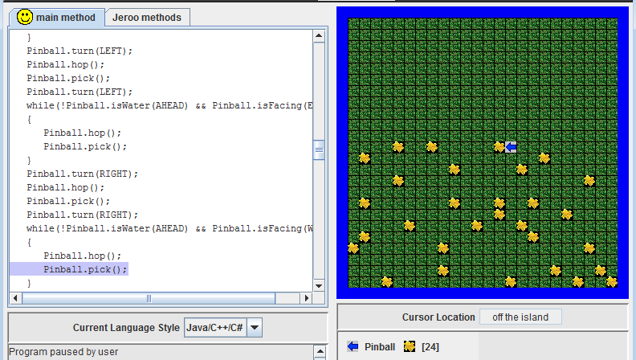
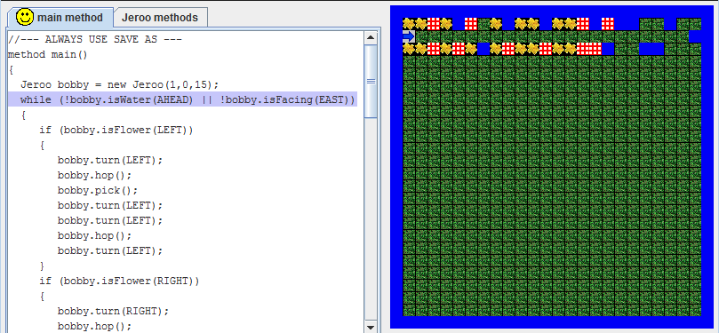
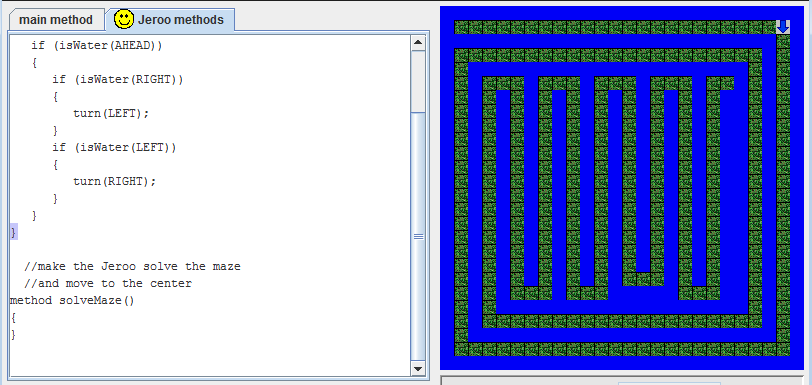

Jeroo
Jeroo Unit 1
Unit 1 was the introduction to Jeroo. Through the labs, we were familiarized with the Jeroo environment. We learned the basic methods such as hop(), plant(), pick(), and turn(). We learned about objects in the Jeroo environment such as water, nets, flowers, and grass. And of course, we learned how to create a new Jeroo.
In the Nets lab, we learned about flowers and nets, and the basic commands hop(); pick(); and toss();. We learned that tossing a flower onto a net destroys it. This was a basic lab meant to introduce us to Jeroo.
The Fenced In lab familiarized us with hopping and turning. We had to navigate the Jeroo through a zigzag path without bumping into nets. As a bonus, the Jeroo would use the toss() to get rid of a net and break free at the end.
Jeroo Unit 2
This unit still mainly used the basic commands hop(), pick(), plant(), toss(), and turn(). However, it taught us to organize those commands with methods, methods that would be called in the main method as needed. In addition, although all the labs could be done without loops, I was curious to find out how I could make my labs more efficient. In this unit, I taught myself conditional statements, with the help of the "help" button.
In the LED lab, we familiarized ourselves with methods. We had to carefully program 10 methods to plant flowers to form the shape of a digit from 0-9, one for each digit. This reinforced our understanding of turn(), hop(), and plant(), and also taught us methods. In addition, the lab taught us to be careful and persistent with programming.
In the Flowers lab, we were to plant flowers along the perimeter of the island. Although this lab could have done with copy pasting hop(); plant(); and putting a turn(); every so often, I taught myself the "while" and "if" statements to be more efficient. This was good practice for Units 3 and 4.
Jeroo Unit 3
Unit 3 taught us about loops. As there were no "repeat () times" in Jeroo, we had to cleverly make use of the "while" loop, as that was our only loop. We also learned about "if" and "if/else" statements, and how to efficiently apply them to programming. Exploring conditional statements in Unit 2 was pretty helpful in this unit, and allowed me to quickly finish labs. Previous Jeroo concepts were reinforced.
In the Water lab, we had to plant flowers around pools of water. As they were all the same size, a single method to plant flowers was sufficient. In the main method, I simply had the Jeroo move from pool to pool and call the planting method. This lab reinforced my understanding of methods, and careful step-by-step programming. I did not use loops in this lab.
In the Pinball lab, we were to pick all the flowers scattered on the map. I had the Jeroo move across the island row by row, and pick any flowers. If statements checked which direction Jeroo was facing, and if Water was ahead. The while loops had Jeroo pick flowers until he got to the water, in which a method for turning was called. This lab taught me how to cleverly use if and while statements to efficiently complete a task.
Jeroo Unit 4
Unit 4 had heavy emphasis on conditional statements, although I already used it in Unit 3. We learned how these conditional statements could be used in conjunction with while loops to carry out a task methodically and only on certain conditions. This final unit really reinforced our understanding of Jeroo through labs more difficult than the ones in Units 1-3.
In the Alley Run lab, the Jeroo had to run along an alley, and do specific things based on what was to the left and right of him. Using a while loop to get the Jeroo moving until the end, and using if statements to check his surroundings, this lab taught me to use if and while statements together to efficiently complete a task. The loop is used to make the Jeroo keep doing the task until the end, and if statements check conditions along the way.
In the Spiral Maze lab, we had to create a method that would allow the Jeroo to follow a winded path (the "maze") without falling into the water. This method had to work for all paths, not just any one. I created a method that made sure Jeroo was facing the path by checking the surrounding water with an if statement. Calling this facePath method, putting it together with hop() inside a while loop allowed Jeroo to keep going until the end and not fall into the water. I learned that calling methods, using if statements to check conditions, and using while loops to keep the program running until the end condition, is a very efficient and good way to solve problems in programming. 